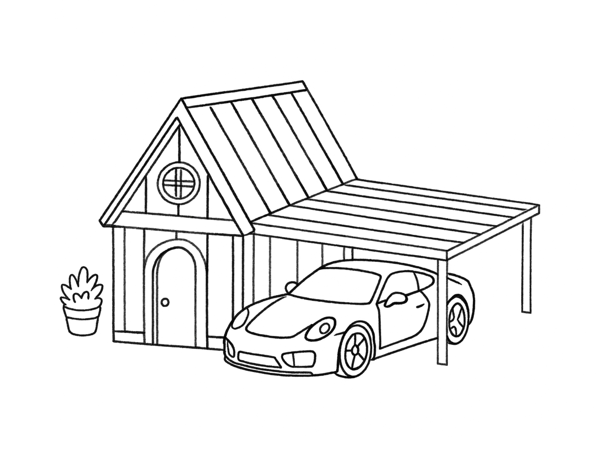
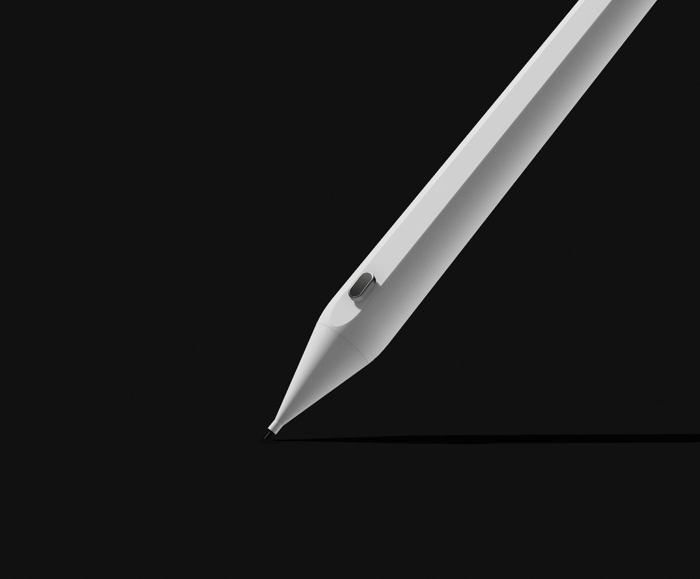
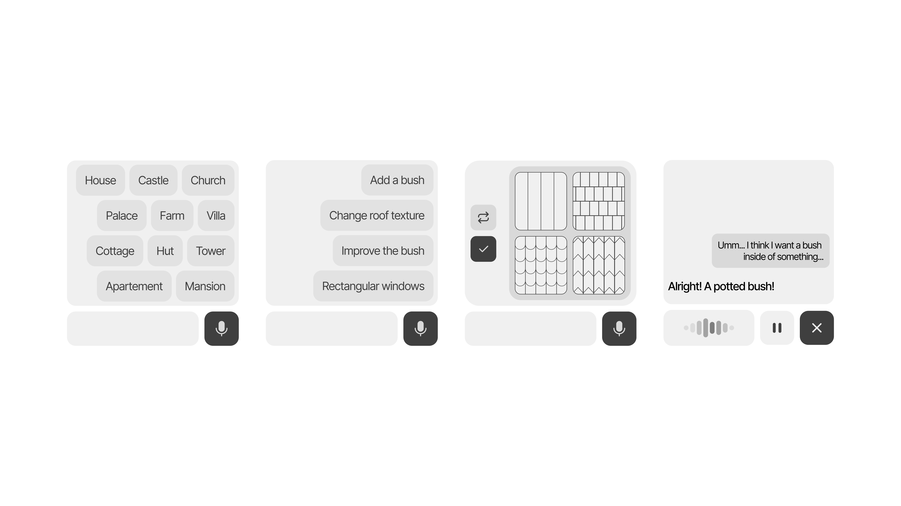
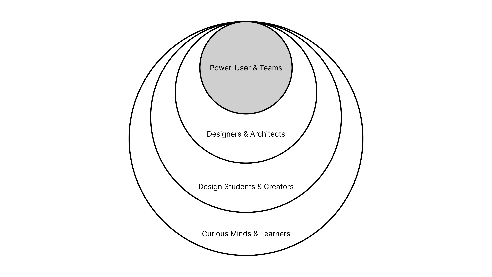
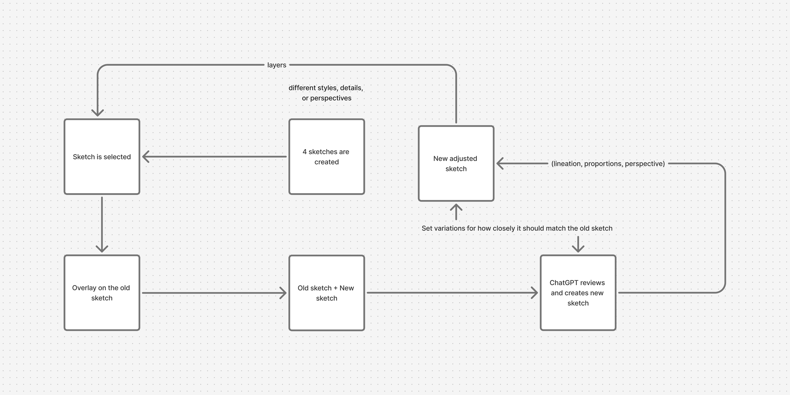
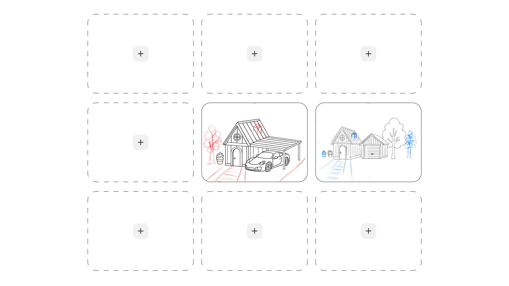
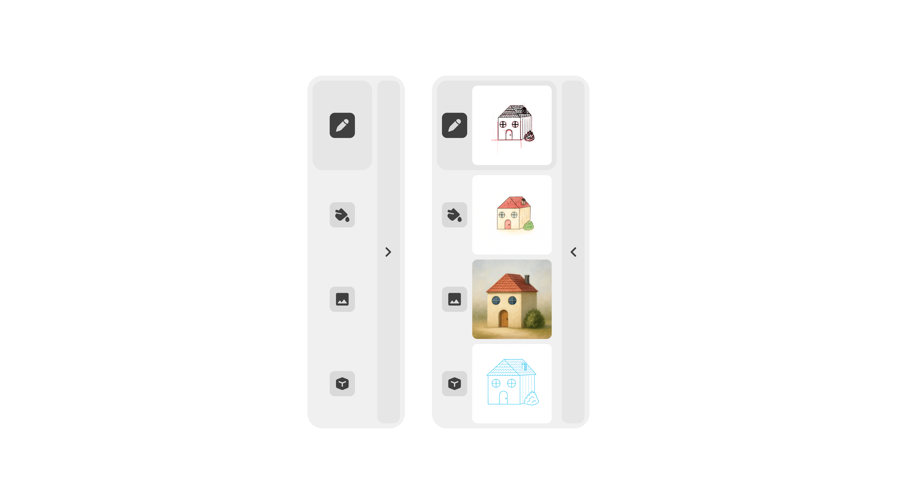
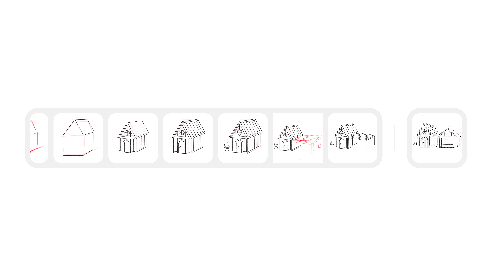
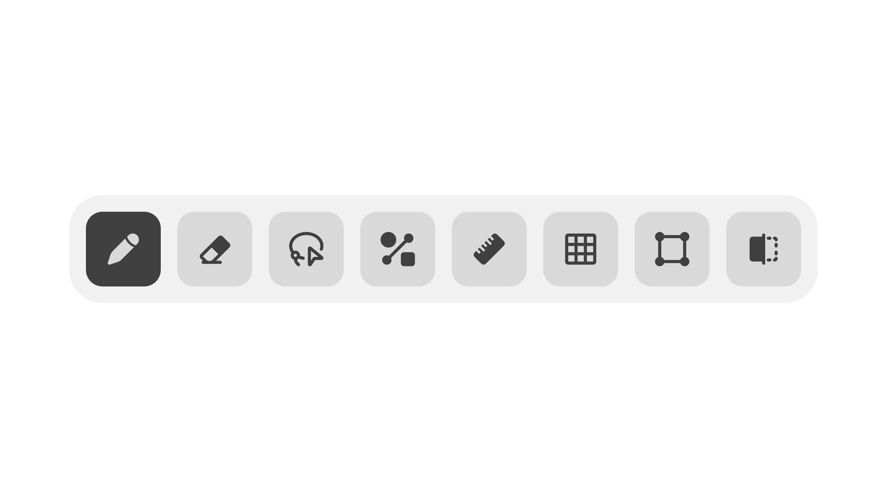
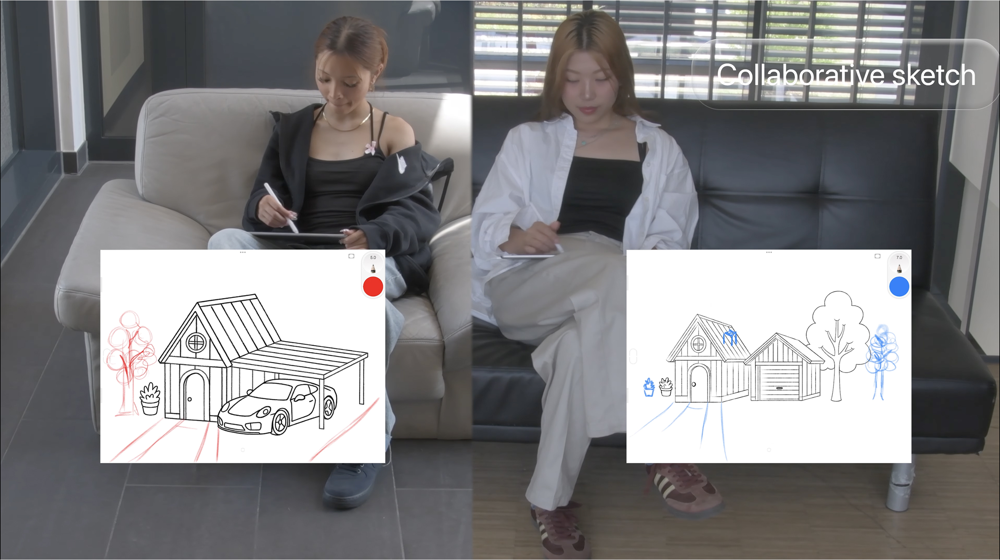

An AI-powered creative assistant that transforms simple sketches into professional visualizations. AIDEA bridges the gap between imagination and execution, helping anyone communicate their ideas visually – regardless of drawing skills.
Ideas often fail not because of lack of imagination, but because of implementation barriers.
In an experiment by designer Gianluca Gimini, over 500 people were asked to draw a bicycle from memory. Only about 25% could draw it correctly – 75% instead created creative but inaccurate variations.
We see the potential to revolutionize how people sketch, refine, and share ideas – regardless of drawing abilities, through a symbiosis of creativity and artificial intelligence.
How many brilliant ideas have vanished from our minds simply because we couldn't express them visually? How many groundbreaking concepts remain trapped in our thoughts, waiting for the right tool to set them free?

You don't need to be an artist; you just need to have ideas worth sharing.
AIDEA is designed for everyone who has ideas but struggles to bring them to life visually. Whether you're a student brainstorming for a presentation, a professional sketching out concepts in meetings, or someone who simply wants to explore their creativity – AIDEA makes visual thinking accessible to all.

What if that rough sketch could become a polished concept in seconds?
This is our house. And you know what? That's exactly how the best ideas begin: with crooked lines, no perspective, but full of imagination.
No perfect drawing skills required, still unmistakably your style – but elevated through AI.
The Smart Pen Concept
Hold the button down and it helps you draw: lines become clearer, shapes more consistent. One click refines your sketch, a double-click undoes the last step. You decide what happens – the AI supports you, not the other way around.
This smart pen brings AI directly into your hand – no menus, no distractions.
The pen features advanced pressure sensitivity, gesture recognition, and seamless integration with our AI system. Every stroke you make is analyzed and enhanced, turning your natural drawing movements into precise, professional lines while preserving your unique artistic style.
Interface Design
From Rough to Refined – Instantly
Messy lines, disproportionate shapes, or duplicate contours? No problem. The AI Refiner recognizes weaknesses in your sketch and cleans them up automatically – either live while drawing or manually with a button press. Your style remains intact, but the form becomes clear and precise.

Sketch Smarter – With One Button
Like a second hand that shows you how your sketch could continue – before you even know it yourself. When you hold the pen button long, AIDEA recognizes what you're planning and places a transparent, style-appropriate guide line under your hand. You see a possible continuation – for example, how a roof might run or what a window could look like – and can trace or ignore this line. It's not autopilot – it's creative co-sketching. In your style. In real time.

One Sketch – Many Views
The modes in AIDEA aren't rigid editing phases, but flexible views of your sketch – they automatically adapt depending on how far along you are. You switch between Sketch, Color, Image, and CAD to see your idea from different perspectives – as a sketch, colored concept, realistically interpreted image, or 3D model. Your original remains preserved – each view helps you work purposefully without disrupting the creative process.


Locked-In – Your Creative Version History
With the Locked-Function, you save targeted intermediate states of your sketch – so-called Locks. These "checkpoints" function like an intelligent version system.
You can jump back to any saved state, compare variants or take new directions from there. Ideal for creative branches: Design different styles, try alternative roof shapes or perspectives – without losing your previous work. Each Lock saves not only the graphic, but also the mode (e.g. Sketch, Color or CAD), so you can specifically track developments. AIDEA thinks of the design process not as linear, but as a branched path. And you decide which way to continue.

Smart Tools That Think With You
These tools feel familiar – but they're smarter, more flexible, and built to support your creative flow with the power of AI.
The Sketch Pen smooths your lines in real time, adapting to your drawing style. The intelligent Eraser removes elements while AI regenerates spaces naturally. The Lasso Tool moves elements with structural awareness, while AI Assist provides context-aware suggestions. For precision, the Ruler Tool creates accurate lines, Grid Toggle provides alignment, and Shape Tool adds forms that integrate seamlessly. The Symmetry Tool mirrors your work for patterns and facades.

Design together, wherever you are. AIDEA lets distributed teams co-create on the same canvas with zero friction.
One designer can block out structure while another experiments with lighting, landscaping, or interior elements — every stroke appears instantly for both people.
Whether it's a quick client jam or an all-day studio sprint, everyone stays aligned without screen-sharing fatigue.
Under the hood, session handoff keeps edits conflict-free, version history lets you rewind if a direction doesn't land, and shared palettes ensure the team is always working with the same visual language.

Prototype & Implementation
We wanted to know: How realistic can our prototype become today? Using ComfyUI and advanced AI models, we built a working prototype that demonstrates AIDEA's core capabilities.
When AI becomes a thoughtful assistant rather than an automated replacement, it empowers designers to explore ideas they never could before.
This walkthrough shows how the prototype translates a quick sketch into a refined visualization. From the initial capture to the generated concepts, every step is explained so designers understand how the system interprets their intent.
Conclusion
AIDEA showed us that the best creative tools stay humble: they clean up the noise so people can stay in their flow. The closer we kept the assistant to the hand, the more natural every decision felt.
We now have a sketching companion that speeds up the rough moments without sanding off the author's voice.
That balance—human lead, machine support—is the direction we're committed to pushing forward.